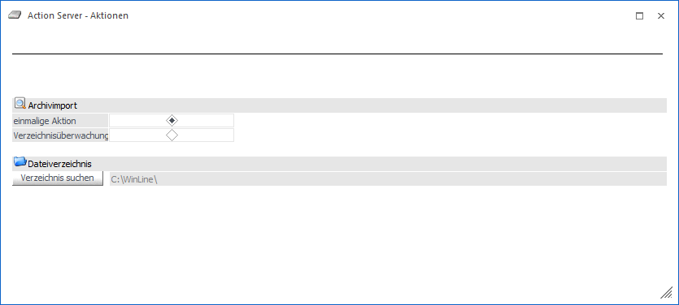

An dieser Stelle kann der automatische Archivimport definiert werden.
Ø einmalige Aktion / Verzeichnisüberwachung
Über diese Einstellung wird definiert, ob nur einmalig ein Archivimport stattfinden soll oder ob ein Verzeichnis dauerhaft überwacht werden soll. Bei der Verzeichnisüberwachung wird sekündlich kontrolliert, ob sich neue Daten in dem Datenverzeichnis befinden, welche importiert werden können.
Hinweis
Da die Zeitsteuerung der Action Server-Aktion bereits an dieser Stelle definiert wird, gibt es in der weiteren Folge keinen Schritt 4.
Für den Import bzw. der Verzeichnisüberwachung ist pro Importdatei eine zugehörige Beschlagwortungsdatei notwendig, da andernfalls kein automatischer Import erfolgt.
Die Beschlagwortungsdatei muss gleich der Importdatei benannt sein und als .txt, .xml oder .ini abgespeichert werden.
Beispiel
Zur Importdatei mit dem Namen "P02W42.300M.230A001-601978.pdf" muss es eine Beschlagwortungsdatei "P02W42.300M.230A001-601978.pdf.txt" (oder .xml/.ini) mit darin enthaltenen Schlagworten geben.
Ø Verzeichnis suchen
Über den Button "Verzeichnis suchen" kann das Verzeichnis hinterlegt werden, in welchem die zu archivierenden Dateien liegen,
Nach der Definition der Aktionsdetails erfolgt im nächsten Schritt die Angabe zu "Benutzer und Mandant".